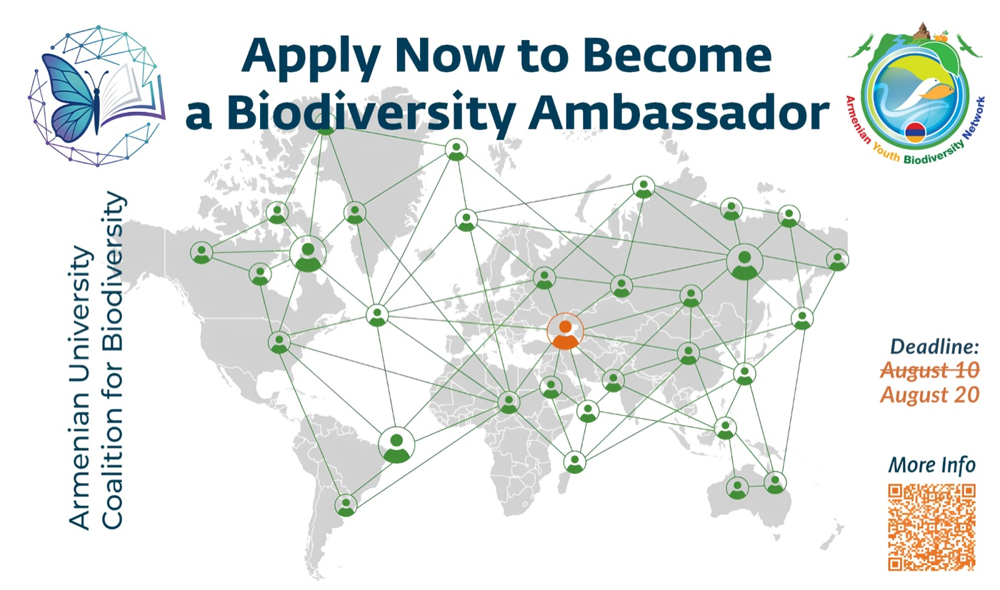

Biodiversity Ambassadors
UN CBD COP17
Leading the operational strategy to recruit, train and deploy a corps of 350 university students as highly visible policy actors ahead of the UN Convention on Biological Diversity in Yerevan. Unlike passive youth observer models, this programme positions ambassadors as active producers of data, policy input and delegate support.
- Institutional architecture. Architected a rigorous hybrid 1.5-month Training Academy spanning four phases — from high-level CBD fundamentals and asynchronous online modules to field-skills development and national ministry collaboration.
- Deployment strategy. Directing the specialization and deployment of the cohort across citizen science, delegate liaison roles and community engagement, ultimately transitioning them into a permanent alumni network supporting Armenia's two-year COP presidency.